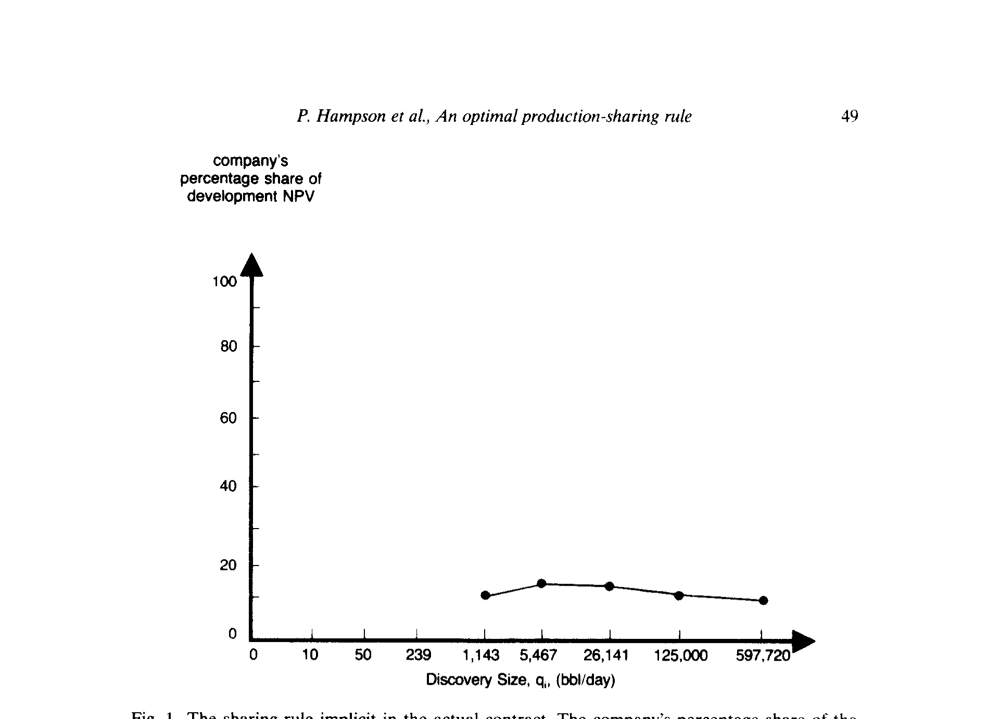
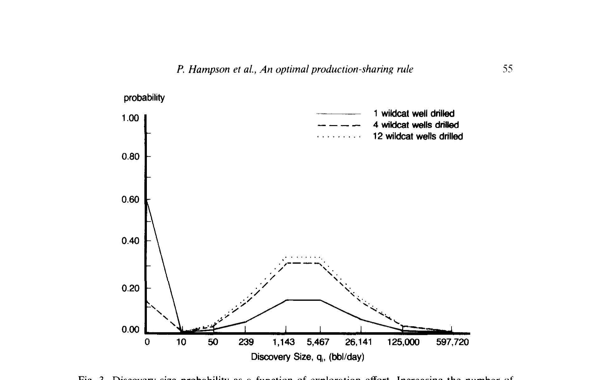
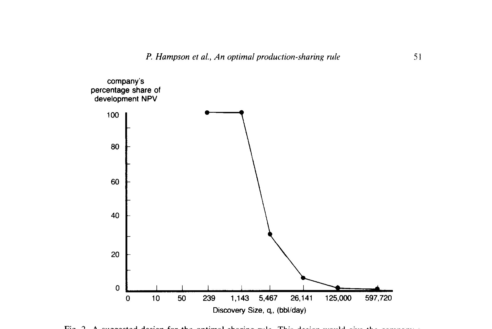
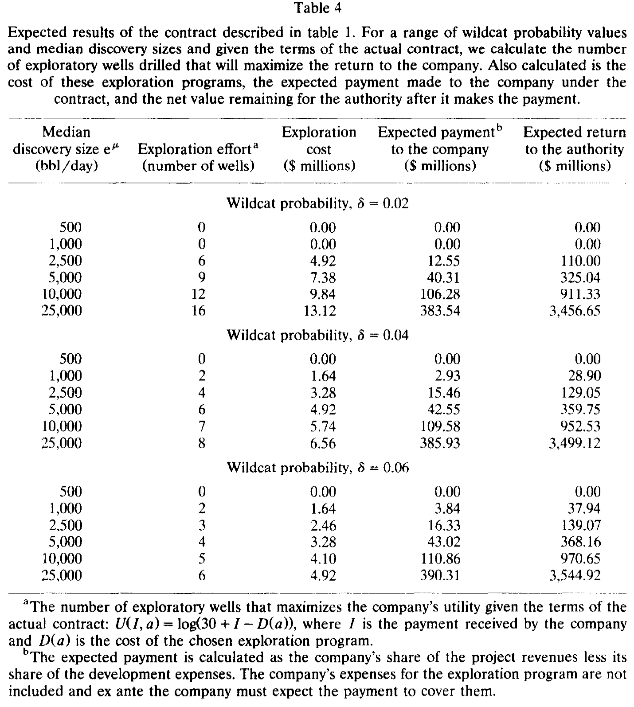
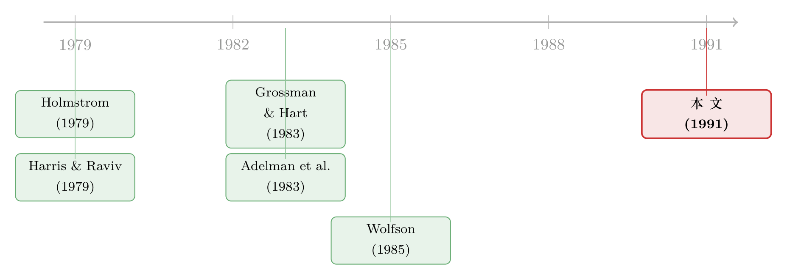

照抄邻国的那份石油合同，把激励算错了
本文读的是 Hampson, Parsons & Blitzer (1991, Journal of Financial Economics)：一家产油国当局把勘探开发权交给一家美国石油公司，用"分成"来激励对方好好钻井；但合同条款是从地质条件完全不同的邻国照抄来的。作者用 Grossman–Hart (1983) 委托代理模型重新校准，发现最优的分成规则应当是"每次发现给一笔固定奖金"——它能让当局的预期收益提高约 6%（在 $129 百万的净现值上多出 $7.8 百万）。
1 一份"抄来的"合同
先讲一个让人有点不安的场景。
1986 年年中，一家产油国的国有资源当局，把一块 10,000 平方公里territory的勘探开发权，交给了一家美国石油公司。很多关键决策——打几口探井、哪些发现值得开发——都由公司自己说了算，当局根本没法监督。于是合同里写下了一条朴素的逻辑：让公司分享石油产量，它自然就会替当局把这块地的价值最大化。
这套思路本身没问题。真正让作者起疑的，是这份合同的来路：它的绝大多数条款，包括那条至关重要的分成公式，是从一个邻国的合同里直接照搬过来的。可两国的地质条件差得惊人。一份为别人量身定做的激励合同，套在一块完全不同的地上，还能"激励"对什么吗？
委托代理 (principal–agent) 理论里有一句被反复强调的话：分成规则的参数必须贴着具体项目来裁——它创造的激励有多强，取决于勘探成本、以及"找到多少油"的概率结构这些假设。把别人的参数抄过来，几乎注定是错的。
这篇论文，本质上就是一次"拿真实合同当病人"的临床解剖。
2 那条"驼峰"形的分成曲线
要看清病灶，先得把这份合同的激励翻译成一张图。
合同是一种profit-sharing与revenue-sharing的混合体。所有勘探与开发成本先记进一个叫成本回收池 (cost recovery pool) 的账户，用 40% 的产量来冲抵；剩下的 60% 才在当局和公司之间按一个阶梯函数分。具体说：当总产量在 0–25,000 bbl/day 时，公司拿被分配石油的 25%；25,000–50,000 区间拿 22%；超过 50,000 时拿 20%。
作者搭了一个仿真模型，把这条阶梯函数翻译成"公司分得的开发净现值 (development NPV) 占比，作为发现规模的函数"。结果很反直觉：在绝对金额上，公司的收益随发现规模一路单调上升；可在比例上，它拿到的份额却呈一个驼峰——从小发现的 32.6% 一路升到中等发现的 39.2%，再回落到大发现的 35.5%；对应到开发 NPV 的占比，则是从 10% 升到 13%（在 1,143–5,467 bbl/day 之间），然后又缓缓跌回 10% 上下。

Figure 1: The sharing rule implicit in the actual contract. The company’s percentage share of the
乍一看，这条"越大发现给越多绝对奖金"的设计像是在鼓励公司去找大油田。但作者认为它次优，理由有两条——而这两条，恰恰是全文的灵魂。
3 真正关键的一步：发现规模"管不了"
先说第一条，也是最深刻的一条。
一个自然的问题是：什么时候才值得让公司的奖金随发现规模递增？答案是——只有当公司的勘探努力，能够改变"找到大油田 vs. 小油田"的相对概率时。如果多打几口井只是提高了"找到油"的总概率，却不改变各种规模发现之间的相对比例，那么发现规模就是公司控制不了的随机量。这时候再让奖金挂钩规模，就纯粹是往公司身上压风险，却换不来任何激励上的好处。
而这块地的地质，恰恰就是后一种情形。
这正是 Holmstrom (1979) 当年为保险合同里的"免赔额"提供的那套逻辑：当 agent 的行动只影响结果的整体水平、而不影响结果的相对分布时，最优合约不该让支付对那个"管不了"的维度敏感。

Figure 3: Discovery size probability as a function of exploration effort. Increasing the number of
如图所示，把探井数从 1 口加到 4 口、再到 12 口，每一种规模发现的概率都被整体抬高，但它们之间的形状——相对比例——纹丝不动。换句话说，努力只能"放大整张概率分布"，不能"把它往大油田那头掰"。
于是结论反转了：最优分成规则不该是驼峰，而该是每次发现给一笔固定奖金，无论它多大。固定的金额，意味着占开发 NPV 的比例单调递减——小发现时公司几乎拿走全部价值，巨型发现时它的份额则小到可以忽略。

Figure 2: A suggested design for the optimal sharing rule. This design would give the company a
这张图和图 1 形成了刺眼的对照。
4 第二条理由：没人去开发的"边际井"
第二条理由，关于完工决策 (completion problem)。
勘探成本一旦sunk、油也找到了，公司还要决定：这口井，值不值得真的去开发投产？如果按"所有各方共享的总收益"来算，连 59 bbl/day 的小井都值得开发。可问题在于——合同永远不会让公司拿到超过 40% 的总收益，而开发和生产的全部费用却要公司自己掏。于是存在一段比 59 bbl/day 大的发现，本该被开发、却会被公司直接放弃。
最优合约的修正方向同样清楚：在小发现上，把全部收益让给公司，确保它有动力去完工每一口"边际上仍然赚钱"的井。（公司在这些低产田上的开发 NPV 本就为负而很小，这正是图 2 左端"公司几乎拿全部"的现实理由。关于把一个项目的开发/完工当成一份会随时间行权的实物期权，可参见《一座金矿什么时候关门？》。）
两条理由，殊途同归，都指向同一种形状：递减的份额，而非驼峰。
5 模型：把 Grossman–Hart 装进一块油田
接下来是真正"算"的部分。作者把 Grossman–Hart (1983) 委托代理模型整个搬了进来。它要两样东西：一是"勘探努力如何影响各规模发现的概率"，二是双方的偏好。
概率结构。 作者设定 20 个勘探程序 \(a_j\)（\(j=1,\dots,20\)），分别代表打 1 到 20 口井。在程序 \(a_j\) 下，找到规模为 \(q\) 的发现的概率，被拆成两块的乘积：(i) 找到任何油的概率 \(G(j)\)；(ii) 在确实有发现的前提下、它恰好是规模 \(q\) 的概率 \(H(q)\)。其中找油概率用一个二项分布刻画：
$$G(j) = 1 - (1-\delta)^{\,j}$$
\(\delta\) 叫wildcat probability（单口探井的成功率）。而 \(H(q)\) 被设成参数为 \(\mu\) 与 \(\sigma\) 的对数正态密度，并且与打井数无关——这正是第 3 节那个核心假设的数学形态。作者用一个 8 点离散分布去近似这条对数正态密度（每点在对数尺度上相距一个标准差），最终得到一个 \(20\times 9\) 的勘探—发现矩阵，第 \(i,j\) 个元素 \(p_i(a_j)\) 就是"在行动 \(a_j\) 下出现发现 \(q_i\)"的概率。
把整篇论文压成一个方程，就是这条概率分解——它把"为什么最优奖金应是固定值"写在了脸上：
a2 那一项与 \(j\) 无关，是整篇论文的阿基米德支点：努力 \(j\) 只能乘进 \(G(j)\)，进不了 \(H(q_i)\) 的形状里。
偏好。 委托人（当局）被设为风险中性，目标就是期望利润最大化。代理人（公司）则必须对idiosyncratic risk厌恶（\(V''<0\)）。它的效用定义在勘探程序 \(a_j\) 与实现报酬 \(I_j\) 上：
$$U(a_j, I_j) = V\big(I_j - H(a_j)\big)$$
这里 \(H(a_j)\) 是公司执行程序 \(a_j\) 付出的勘探费用，\(I_j\) 应理解为公司分得的那份开发 NPV（当局会报销开发费用，但不报销勘探费用）。论文采用的具体形式是
$$U(a_j, I_j) = \ln\!\big(30 + I_j - H(a_j)\big)$$
给定一套分成规则 \(I^{*}=(I_1^{*},\dots,I_9^{*})\)，公司会挑选让自己期望效用最高的那个勘探程序：
$$a_A \;=\; \arg\max_{a_j \in \{a_1,\dots,a_{20}\}}\; \sum_{i=1}^{9} p_i(a_j)\, U(a_j, I_i)$$
作者也用指数效用重做了一遍，分成规则的定性形状不变，只是数值略有出入——这说明结论不是某个特定效用函数"凑"出来的。
6 主要结果：6% 的差距，到底差在哪
有了矩阵，"first-best"就好算了：公司只要挑那个"期望开发 NPV 减勘探成本"最大的程序即可。

Table 4
把数字摆出来对照（中位发现规模 2,500 bbl/day 这一基准情形）：
- 第一最优（Table 3）：最优打
9口井，勘探成本$7.38百万，预期开发 NPV$164.36百万，扣掉勘探成本后的预期项目 NPV 是$156.98百万。 - 实际合同下（Table 4）：公司只会去打
4口井，成本$3.28百万，预期拿到$15.46百万，留给当局的预期净值是$129.05百万——大约只有第一最优的82%。
剩下那 18% 的差距里，有一部分来自激励扭曲：合同诱导公司打井太少（4 口 vs. 9 口），又因为完工问题放弃了一些本该开发的边际井。作者校准出的固定奖金式最优规则，正是冲着这两处去的。把实际合同换成最优分成规则，能让项目的总预期收益增加约 $7.8 百万——相当于当局在原合同下所得 $129 百万 NPV 的 6%。
6% 听上去不大，但请记住：这是一份已经签了字的真实合同，仅仅把分成曲线的形状改对，就凭空多出近八百万美元。
作者还顺手记下了几条"经验法则"：最优探井数随中位发现规模上升而上升；而 wildcat 概率 \(\delta\) 翻倍，最优钻井努力大致减半——因为成功率越高，第一口井就越可能把勘探的全部好处吃掉，后续井的边际价值随之坍塌，那笔钱不如挪去别的territory。
7 文献脉络
这条线的源头，是机制设计与委托代理理论的两块基石。Harris & Raviv (1979) 与 Holmstrom (1979) 几乎同时给出了"不完全信息下最优激励合约"的框架；其中 Holmstrom 关于"行动只影响结果水平、不影响相对分布时该怎么设计支付"的洞见，正是本文第一条理由的理论母体。Grossman & Hart (1983) 则把委托代理问题写成了一个可计算的优化结构——它是本文真正的"引擎"。

另一条支流来自能源经济学：Adelman, Houghton, Kaufman & Zimmerman (1983) 提供了把"勘探努力—发现规模"翻译成概率矩阵的地质学方法，本文的 \(G(j)\cdot H(q)\) 结构正脱胎于此；Wolfson (1985) 则在美国的油气合伙制里，实证记录了与本文"完工问题"如出一辙的激励扭曲。本文站在这两条支流的交汇处：它不满足于用代理模型去解释已有合同，而是反过来用模型去重新设计与校准一份真实合同的参数——这在当时是少见的。（关于代理理论作为公司金融底色的来龙去脉，可参见《债务这副药，为什么不能全吃？——重读 Jensen 和 Meckling 五十年》；关于从代理问题里"长"出最优证券与合约的思路，亦可对照《把债、信贷额度和股权，从一个代理问题里「长」出来》。）
8 评论与延伸（Q&A + 研究方向）
(a) 几个可能的疑问
Q：固定奖金最优，这个结论是不是太依赖"发现规模管不了"这个假设了？
是的，而且作者自己也坦承了这一点。论文明确指出：如果增加勘探反而提高了大发现的相对概率，那么最优规则可能反过来给公司一个陡增的份额（Grossman–Hart 命题 7–9），形状会非常接近原合同。整篇文章的结论是"条件最优"，前提就是 \(H(q)\) 与 \(j\) 无关。这既是它的力量，也是它的软肋。
Q：那这是不是说明原合同其实可能是对的，只是作者的地质假设错了？
这正是作者列出的 caveat 之一。原合同也可能在处理别的代理问题——比如开采速率会同时影响产油的时间分布、成本和一块田最终能采出的总量。若如此，原合同未必次优。作者的态度很诚实：他们不是要"判合同死刑"，而是要论证"不用一个显式模型，你根本说不清激励到底错在哪"。
Q：当局是风险中性、公司是风险厌恶，这个不对称会不会本身就主导了结论？
它确实是"固定奖金"之所以可行的前提：风险中性的委托人愿意承担规模风险，风险厌恶的代理人则不愿。但作者用 \(\ln\) 效用和指数效用各算了一遍，定性形状不变，说明结论对效用函数的具体形式不敏感——敏感的是那个概率独立性假设，而不是风险偏好的细节。
Q：6% 的改进，是不是被某一个基准情形的参数撑起来的？
论文在一整张 \(\delta\) 与中位发现规模的网格上做了对比（Table 3 与 Table 4），结论的方向是稳健的：实际合同普遍诱导偏少的钻井。但 6% 这个具体数字确实绑定在
2,500bbl/day、特定 \(\delta\) 的基准上，换一组地质参数，量级会变。这是一份案例研究，不是普适定理。
Q：为什么效用函数里要凭空加一个常数 30？
这是为了给公司一个非零的初始财富基准，避免 \(\ln(\cdot)\) 在小额或负的净支付处发散——本质上是个校准选择。作者把"参数怎么定、结果对参数多敏感"这两个问题专门推迟到后文讨论，说明他们清楚这类设定带有主观性。
Q：这套方法和后来公司金融里"最优证券设计"的研究是什么关系？
精神上一脉相承：都是从一个具体的成本—收益结构出发，去反推契约应有的形状。区别在于，本文是把理论用在一份单一的真实合同上做临床校准，而非推导一般性的证券形式。它更像一份"理论的工程应用说明书"。
(b) 几个可能的研究问题与提案
-
把"完工期权"显式建成实物期权再嵌进契约。 【经济故事】本文的完工问题（边际井开发与否）本质是一个跨期的实物期权：油价随机、开发成本可观，公司在"现在开发/等待/放弃"之间选择。把这层期权显式建模，最优分成规则会从静态形状变成状态依赖的，可能与本文的固定奖金有系统差异。【可行性】中。需要油价的随机过程设定与单田级的成本数据；识别靠结构估计，难点在于真实合同与产量数据的可得性。
-
把这套校准搬到公司债的契约条款上。 【经济故事】债券契约里的rating trigger、赎回条款、抵押安排，本质都是"在不可监督的状态下给管理层定激励"的分成式装置。能否像本文一样，用一个委托代理模型反推某一类条款的最优参数，再与市场上实际观察到的条款对照？【可行性】中。数据（如 Mergent FISD 的契约条款 + 评级路径）相对易得；难在为"管理层行动如何影响违约分布"建立可信的概率结构——这正是本文 \(H(q)\) 独立性假设的债市翻版。
-
检验"抄合同"现象本身。 【经济故事】本文最生动的发现其实是一句旁白：关键条款是从邻国照抄的。如果能在一个跨国的资源/特许合同样本里，量化"条款相似度 vs. 地质/项目异质度"，就能直接检验"合同惰性"造成了多大的价值损失。【可行性】低到中。资源合同多为私人法律文书、披露稀少，构造样本是最大障碍；但若能拿到某监管机构的合同库，识别会很干净。
-
风险厌恶来源的内生化。 【经济故事】本文给公司"硬塞"了一个风险厌恶（\(V''<0\)），但一家上市石油公司理论上该接近风险中性。真正的风险厌恶可能来自融资约束或经理人的职业顾虑。把这层微观基础补上，最优分成规则会怎样改变？【可行性】中。可借公司层面的融资约束代理变量与高管薪酬数据来标定"有效风险厌恶"，再代回本文框架重算。
参考文献
- Adelman, M. A., Houghton, J. C., Kaufman, G., & Zimmerman, M. (1983). Energy Resources in an Uncertain Future. Ballinger, Cambridge, MA.
- Grossman, S. J., & Hart, O. D. (1983). An analysis of the principal-agent problem. Econometrica 51(1), 7–45.
- Hampson, P., Parsons, J., & Blitzer, C. (1991). A case study in the design of an optimal production sharing rule for a petroleum exploration venture. Journal of Financial Economics 30(1), 45–67.
- Harris, M., & Raviv, A. (1979). Optimal incentive contracts with imperfect information. Journal of Economic Theory 20(2), 231–259.
- Holmstrom, B. (1979). Moral hazard and observability. Bell Journal of Economics 10(1), 74–91.
- Wolfson, M. A. (1985). Empirical evidence of incentive problems and their mitigation in oil and gas tax shelter programs. In J. W. Pratt & R. J. Zeckhauser (Eds.), Principals and Agents: The Structure of Business (pp. 101–125). Harvard Business School Press, Boston, MA.